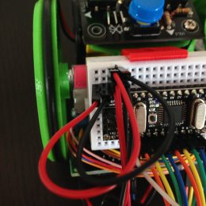
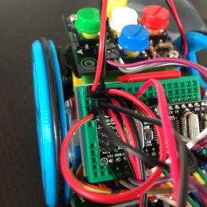
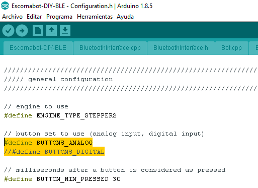
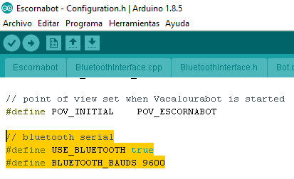
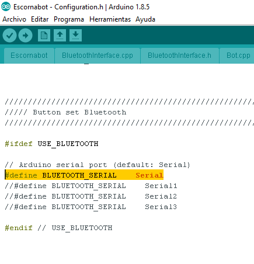
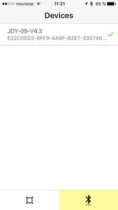
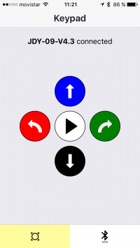

Añadir módulo Bluetooth BLE
Guía de referencia, con enlaces al Bluetooth necesario aquí
Material necesario
- 2 cables macho-macho de 10cm
- 4 cables macho-hembra de 10cm
- 1 Bluetooth Ble HM-10 o compatible
- APP Escornabot para Android o IOS
Importante - Esta aplicación funciona solamente con módulos BLUETOOTH BLE, si utilizas un Bluetooth normal como HC-05 o HC-06 lee esta entrada de Lobotic
2 cables macho-macho
Primero necesitaremos los dos cables macho-macho (con pincho en los dos lados) para ampliar los GND disponibles y así poder usar uno para el Bluetooth.
Si tienes dudas sobre el funcionamiento de la protoboard visita de nuevo su apartado en el curso.
Pincharemos el cable rojo encima del rojo y el negro encima del negro de las placas de los drivers.
Puede que en el kit el color de los cables sea diferente. No importa, lo que cuenta es colocar cada cable en su posición. El único motivo de intentar utilizar cableado del mismo color es facilitar el montaje del robot.
Después en las dos filas que tenemos libres pincharemos los otros estremos de las puntas, de este modo tendremos dos filas libres en la parte superior:

- Para conectar el cable del portapilas.
- Para conectar el GND del Bluetooth.
4 Cables macho-hembra de 10cm y 1 módulo Bluetooth BLE HM-10 o compatible
Relación de conexiones entre las patillas del Bluetooth y el Arduino Nano:
| Bluetooth BLE | Arduino NANO |
|---|---|
| RX | TX |
| TX | RX |
| GND | GND |
| VCC | 5V |
Utilizaremos los cables de color negro para GND o negativo y los de color rojo para VIN, VCC, 5V o positivo.
El cable negro lo pinchamos en la patilla GND del Bluetooth y la otra parte encima del negro que hemos ampliado anteriormente.
El cable rojo lo pinchamos en la patilla VCC del Bluetooth y la otra parte encima del cable de corriente 5V del teclado.

Usaremos otros dos cables macho-hembra para conectar las patillas RX, TX del Bluetooth con las del Arduino NANO.
- La patilla RX del Bluetooth la conectamos al TX del Arduino.
- La patilla TX del Bluetooth la conectamos al RX del Arduino.
Cambios y verificaciones en la programación
Entramos en la pestaña "Configuration.h"
Buscamos la parte del código que muestra la imagen:

Dejamos la línea #define BUTTONS_ANALOG para poder utilizar también el teclado
Revisamos si tenemos activada la opción Bluetooth y los baudios a los que enlazará
En la mayoría de los casos funcionan a 9600 baudios que es el valor por defecto que lleva la programación.
Si quieres saber como comprobar los baudios a los que esta programado vuestro módulo visita esta entrada de Makespace Madrid

Si en la pestaña "Configuration.h" no vemos las líneas que aparecen en la imagen las debemos añadir.
Activar línea Serial
Dentro de la pestaña "Configuration.h", al final buscamos este apartado:

Quitamos las dos barras inclinadas de la línea:
//#define BLUETOOTH_SERIAL Serial
Para saber si queda activada, la línea pasa de color gris a negro y la palabra Serial final se pone en amarillo.
Instalación aplicación Escornabot
Descargamos la aplicación gratuita en nuestro móvil o tablet:
Conectar alimentación y vinculación Bluetooth con APP
Ya tenemos todo preparado, lo siguiente:
- Conectamos la alimentación del robot, justo encima de la ampliación que hicimos al inicio. El robot debería dar el pitido del check inicial y el led rojo del Bluetooth comenzar a partadear.
- Entramos en la aplicación, buscamos el dispositivo Bluetooth y nos conectamos, una vez enlazados la luz del Bluetooth dejará de parpadear para quedarse fija.

- Pulsamos en la parte inferior, en el dibujo del círculo con las flechas y pasamos a la pestaña del teclado. Si todo ha ido bien cuando pulsemos cada tecla en nuestro teléfono el robot emitirá un pitido y al pulsar el botón blanco comenzará a caminar.

Ya tenemos nuestro Escornabot con conexión Bluetooth.

Escornabot, un robot gallego Open Source. La recopilación de material de este curso ha sido elaborada por Pablo Rubio Martínez bajo licencia Creative Commons Attribution-ShareAlike 4.0 International (CC BY-SA 4.0).